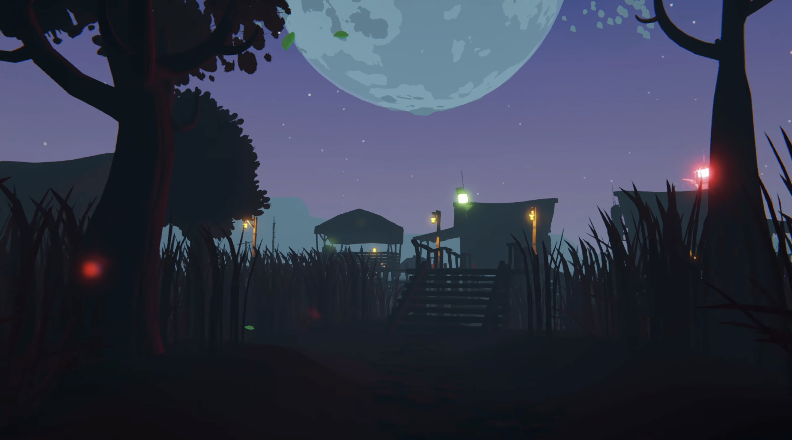
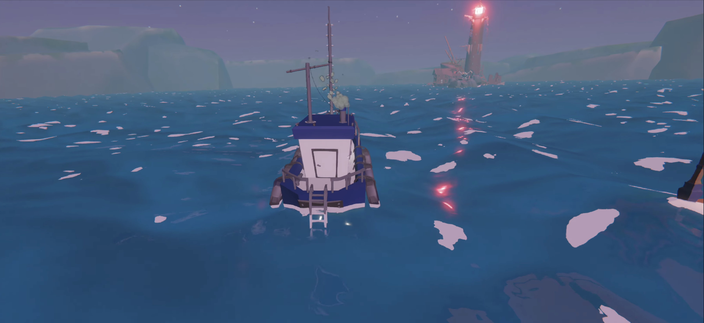
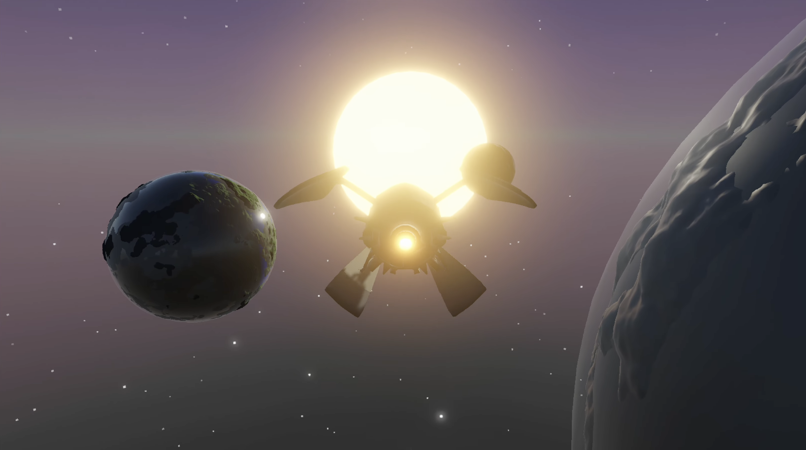

Lost Worlds

A 3D exploration game built in Unity and coded in C#, where the player navigates an island to uncover what happened to a missing character named Bob. The experience combines dialogue, interaction, and multiple gameplay mechanics to create a simple narrative-driven world.

The project was developed in Unity using C#, with a focus on connecting input, gameplay systems, and world interaction into a cohesive experience. It demonstrates an understanding of structuring interactive systems, handling user input across different contexts, and designing gameplay mechanics that support both exploration and narrative progression.

The project focuses on building interconnected systems. A modular interaction system allows the player to engage with objects and NPCs, while a custom dialogue system drives the story forward. Movement is handled through a first-person controller, and the player can switch between different modes of traversal, including sailing a boat and flying a spaceship with its own control scheme.

Overall, the project explores how different gameplay systems interaction, movement, vehicles, and dialogue can be combined to create a cohesive and interactive 3D experience.